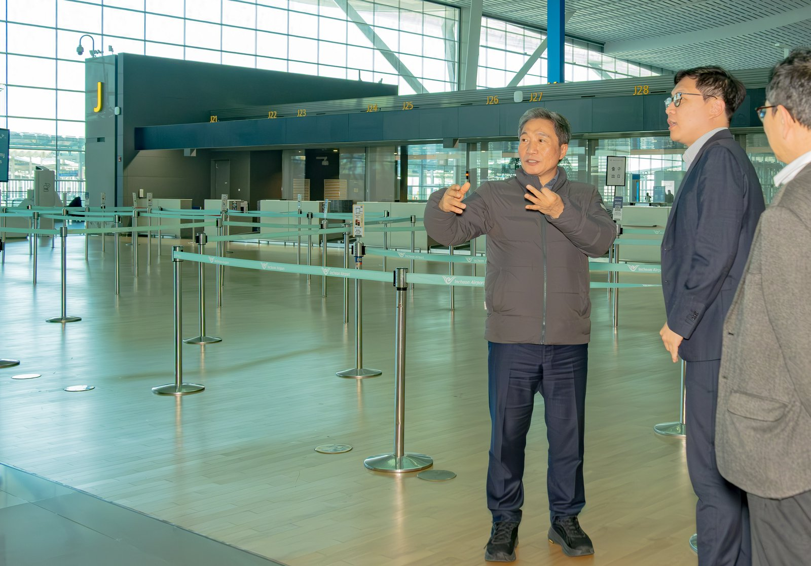
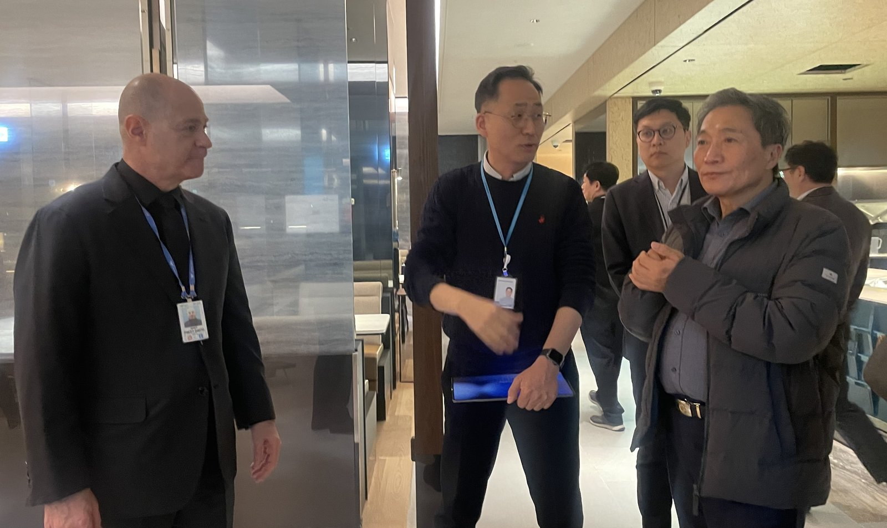

통합 대한항공 출범 한 달 앞 시정조치 사건 다섯 건 심의
이행강제금 두 차례 185억6000만원
청주~제주 고발 의견, 괌 노선 완화 기각 의견
근로자 승계와 아시아나 마일리지 10년 관리
AI경제저널=김갑봉 기자 | 대한항공과 아시아나항공이 12월 17일 통합 대한항공으로 출범한다. 출범을 한 달 앞둔 11월 18일 현재 공정거래위원회는 대한항공 계열 항공사 사건 다섯 건을 심의하고 있다.
시정조치 불이행, 의무 변경 요청, 조사방해 사건이다. 공정위 심사관은 청주~제주 노선 좌석 축소에 이행강제금과 고발 의견을 냈다.

2020년 11월 독과점·고용·공적자금 우려
한국산업은행(산업은행)이 2020년 11월 한진칼에 8000억원을 투자해 대한항공이 아시아나항공을 인수하는 계획을 발표했다. 계획한 인수대금은 약 1조8000억원이었다.
참여연대 경제금융센터는 11월 17일 논평에서 독과점 해소, 고용안정, 공적자금 회수 방안을 요구했다. 계열 저비용항공사를 더하면 국내선 점유율이 60%를 넘는다고 봤다.
참여연대는 "인위적인 구조조정은 없을 것"이라는 한진그룹 확약만으로 공적자금 8000억원을 넣기에는 근거가 부족하다고 했다.
참여연대는 아시아나에 이미 들어간 차입금 3조3000억원과 지원이 결정된 기간산업안정기금 2조4000억원 회수 방안 점검도 요구했다.
산업은행은 당시 책임경영과 통합 작업에 대비해 윤리경영위원회를 두겠다고 했고, 독과점에 따른 운임 인상과 소비자 편익 저해를 적극 관리하겠다고 밝혔다.
참여연대 논평을 보면 산업은행은 저비용항공사와 경쟁으로 통합 뒤에도 점유율 변화가 크지 않을 것이라고 주장했다.
운임 위반 121억원과 좌석 위반 64억6000만원 제재
공정위는 2022년 5월 9일 결합을 조건부로 승인했다. 대한항공은 2024년 12월 12일 아시아나 주식 취득을 마쳤고, 공정위는 12월 24일 시정조치를 고쳐 확정했다.
공정위가 본 경쟁제한 우려 노선은 40개다. 국제선 26개와 국내선 8개는 대체항공사가 원하면 슬롯과 운수권을 넘겨야 한다.
40개 노선에는 2019년 대비 물가상승분을 넘는 운임 인상과 좌석 90% 미만 축소가 금지됐다. 구조적 조치 대상 노선은 이전을 마치면 이 의무가 풀린다. 시정조치 준수 기간은 2034년 말까지다.
조선대 무역학과 이창재는 2024년 논문에서 행태적 조치가 운임 인상과 서비스 질 저하를 막으려는 장치라고 설명했다.
공정위가 2025년 8월 1일 밝힌 첫 제재는 운임 위반이었다. 아시아나항공 평균운임은 2025년 1분기 국제선 3개, 국내선 1개 노선에서 2019년 대비 물가상승분 인상 한도를 최대 28.2% 넘었다.
공정위는 아시아나항공에 이행강제금 121억원을 부과하고 법인을 고발했다. 공정위는 당시 기업결합 이행강제금 제도 도입 뒤 가장 큰 규모라고 밝혔다.
두 번째 제재는 2025년 12월 22일 나왔다. 2024년 12월 12일~2025년 3월 28일 양사의 인천~프랑크푸르트 공급 좌석은 8만2534석이었다. 2019년 같은 기간 11만8728석의 69.5%다.
공정위는 대한항공에 이행강제금 58억8000만원, 아시아나항공에 5억8000만원을 부과했다. 공정위가 대한항공 이행강제금을 94% 깎아 시행령 한도를 넘었다는 보도가 나오자 공정위는 2026년 5월 10일 설명자료를 냈다.
공정위는 시행령의 면제 규정과, 현저히 불합리하면 다른 금액을 부과할 수 있게 한 고시 예외 규정을 들었다. 시정조치 하나, 노선 하나만 어겼고 대체항공사가 운항을 시작해 소비자 피해 우려가 적었다는 설명이다.
청주~제주 고발 의견과 조사방해 심의
국토교통부(국토부)와 공정위가 2026년 1월 6일 밝힌 대체항공사는 인천~시애틀 알래스카항공, 인천~호놀룰루 에어프레미아, 인천~자카르타 티웨이항공 등이다. 인천·부산~괌과 광주~제주에는 신청 항공사가 없었다.
대한항공 계열 5개사는 청주~제주 기준을 2019년 대비 70%로 낮춰 달라고 요청했다. 중동 전쟁으로 유가와 환율이 올랐다며 2026년 전 노선 의무의 면제나 완화도 요청했다.
공정위는 청주~제주 요청을 조사하려고 2월 2~6일 대한항공 본사를 현장조사했다. 심사관은 직원 3명이 2월 2~4일 파일과 전자메일을 지워 조사를 방해했다며 회사와 직원 고발 의견을 냈다.
심사관은 9월 10일 피심인에게 보낸 심사보고서에서 두 요청에 기각 의견을 냈다. 청주~제주는 2024년 12월 24일 이후 새 사정변경이 없다고 봤고, 중동 건은 발권 내역으로 추정한 수요가 위축되지 않았다고 봤다.
5개사는 괌 수요가 줄었다며 대체항공사가 없어도 슬롯을 자진 반납하면 구조적 조치를 마친 것으로 봐 달라고 요청했다. 좌석 기준도 90%에서 70%로 낮춰 달라고 했다.
공정위가 9월 30일 밝힌 심사보고서에서 심사관은 이 요청을 기각하자고 했다. 대한항공·진에어·아시아나항공이 2024년 12월 12일~2025년 12월 31일 청주~제주 좌석을 2019년 같은 기간의 90% 밑으로 줄였다고도 봤다.
심사관은 3개사에 이행강제금을 부과하고 각각 고발하자는 의견을 냈다. 심사보고서는 위원회를 구속하지 않는다. 피심인은 서면 의견 제출과 의견진술 기회를 받고, 최종 판단은 전원회의가 내린다.
11월 18일 현재 다섯 건의 의결은 발표되지 않았다. 공정위는 시정조치 이행 여부를 계속 점검해 소비자 피해가 생기지 않게 하겠다고 밝혔다.

근로자 일체 승계와 마일리지 10년 관리
5월 13일 양사 이사회가 승인한 합병계약은 아시아나 자산·부채와 근로자 일체를 승계한다. 아시아나 1주에 대한항공 0.2736432주를 준다. 대한항공은 같은 날 지원받은 공적자금을 전액 상환했다고 밝혔다.
국토부는 6월 25일 두 회사 합병을 조건부로 인가했다. 이소영 국토부 항공정책관은 당시 "항공 안전과 소비자 편의가 축소되지 않도록 엄중히 관리·감독하겠다"고 말했다.
아시아나항공은 2025년 사업보고서에 산업은행 등에서 3조6000억원 규모 정책자금을 지원받았다고 적었다.
아시아나는 대한항공 유상증자 대금이 들어온 직후 정책자금 1조1000억원을 갚았고, 2025년 2월 남은 정책자금 대출금 1조3800억원을 모두 갚았다.
국토부와 공정위는 11월 12일 국토부가 진에어·에어서울·에어부산 합병을 인가했고 공정위가 기업결합 신고를 승인했다고 밝혔다. 진에어가 낸 부산 제2허브 육성 계획에는 기존 인력 고용승계와 인위적 구조조정 배제가 들어갔다.
인천국제공항공사는 1월 9일 아시아나항공이 1월 14일부터 제2여객터미널에서 운항한다고 밝혔다. 이 이전으로 제1·제2여객터미널 여객 분담률이 65대 35에서 50대 50으로 바뀐다는 설명이다.
공정위가 9월 14일 승인한 통합방안을 보면 아시아나 마일리지는 합병일부터 10년간 따로 관리된다. 대한항공 마일리지로 바꾸면 탑승분 1대 1, 제휴분 1대 0.82(대한항공 대 아시아나)로 계산한다.
대한항공은 보너스 좌석 탑승실적을 10년간 2024년 양사 합산 이상으로, 미주·유럽·대양주는 2023년 이상으로 지켜야 한다. 공정위는 이행감독위원회를 거쳐 이를 점검한다.
대한항공 공지를 보면 12월 17일 출발편부터 아시아나항공 항공편은 대한항공 편명으로 바뀐다. 항공권 변경·환불 문의도 이날부터 대한항공과 예매처가 받는다.
참고문헌
공식 발표·공공기록
- 공정거래위원회, 「아시아나항공의 시정조치 불이행 제재」 보도자료, 2025년 8월 1일(8월 4일 조간), https://www.ftc.go.kr/www/selectBbsNttView.do?key=12&bordCd=3&nttSn=46303
- 공정거래위원회, 「대한항공 및 아시아나항공의 시정조치 불이행 제재」 보도자료, 2025년 12월 22일(12월 23일 조간), https://www.ftc.go.kr/www/selectBbsNttView.do?key=12&bordCd=3&nttSn=46792
- 국토교통부·공정거래위원회, 「대한항공-아시아나 기업결합 관련 국제·국내 항공노선 대체항공사 선정」 보도참고자료, 2026년 1월 6일, https://www.ftc.go.kr/www/selectBbsNttView.do?key=12&bordCd=3&nttSn=46851
- 인천국제공항공사, 「인천공항공사, 아시아나항공 이전 대비 CEO 주관 최종 현장점검 실시 !!!」 보도자료, 2026년 1월 9일, https://www.airport.kr/bbs/co_ko/84/139180/artclView.do
- 아시아나항공, 「사업보고서(제38기, 2025.1.1~2025.12.31)」, 금융감독원 전자공시시스템, 2026년 3월 18일, https://dart.fss.or.kr/dsaf001/main.do?rcpNo=20260318001045
- 공정거래위원회, 「[설명] 연합뉴스(5.10.) "공정위, 대한항공 이행강제금 94% 감경...시행령 넘은 의결 논란'" 기사 관련」 설명자료, 2026년 5월 10일, https://www.ftc.go.kr/www/selectBbsNttView.do?key=12&bordCd=3&nttSn=47462
- 대한항공, "대한항공, 아시아나항공 합병계약 체결… 2026년 12월 17일 '통합 대한항공' 출범", 대한항공 뉴스룸, 2026년 5월 13일, https://news.koreanair.com/대한항공-아시아나항공-합병계약-체결-2026년-12월-17일/
- 국토교통부, "국토부, 대한항공-아시아나 합병 인가…12월 통합항공사 출범", 대한민국 정책브리핑, 2026년 6월 26일, https://www.korea.kr/news/policyNewsView.do?newsId=148967184
- 공정거래위원회, 「대한항공-아시아나 기업결합 관련 시정명령 변경요청 2건 및 대한항공의 조사방해 건 심의 절차 개시」 보도자료, 2026년 9월 10일(9월 11일 조간), https://www.ftc.go.kr/www/selectBbsNttView.do?key=12&bordCd=3&nttSn=47991
- 대한항공, "대한항공-아시아나항공 통합에 따른 항공편명 변경 및 항공권 예약정보 이관" 공지사항, 2026년 9월 14일, https://www.koreanair.com/contents/footer/customer-support/notice/2026/2609-rservation-information
- 공정거래위원회, 「대한항공-아시아나 마일리지 통합방안 최종 승인」 보도자료, 2026년 9월 15일(9월 16일 조간), https://www.ftc.go.kr/www/selectBbsNttView.do?key=12&bordCd=3&nttSn=48015
- 공정거래위원회, 「대한항공-아시아나 기업결합 관련 시정조치 불이행 및 시정조치 변경신청 건 심의 절차 개시」 보도자료, 2026년 9월 30일(10월 1일 조간), https://www.ftc.go.kr/www/selectBbsNttView.do?key=12&bordCd=3&nttSn=48070
- 국토교통부·공정거래위원회, 「진에어-에어서울-에어부산 합병 인가, 27년 3월 17일부터 진에어로 통합 예정」 보도참고자료, 2026년 11월 12일, https://www.ftc.go.kr/www/selectBbsNttView.do?key=12&bordCd=3&nttSn=48219
논문
- 이창재, 「항공사 기업결합의 경쟁제한성 판단기준 - 국내 FSC 기업결합 및 미국 판례를 중심으로 -」, 『법학논총』 31권 3호, 조선대학교 법학연구원, 2024, 89~122쪽, https://doi.org/10.18189/isicu.2024.31.3.98
시민단체 자료
- 참여연대 경제금융센터, "[논평] 대한항공의 아시아나 인수 발표에 대한 참여연대 입장", 2020년 11월 17일, https://peoplepower21.org/economy/1745037
원 기사
- 김갑봉, "대한항공ㆍ아시아나 합병... '독과점 해소 고용안정 제시해야'", 인천투데이, 2020년 11월 18일, https://www.incheontoday.com/news/articleView.html?idxno=204262
사진 출처
- [사진1]·[사진2] 인천국제공항공사 2026년 1월 9일 보도자료 별첨1·별첨4
관련기사
- [글로벌 인천공항⑭] 한중 노선 국적사 몫 54%→46%, 베이징·상하이 늘려야
- 항공사만 101개 인천공항, 독점인데 경쟁하는 이유
- 해경 함정 최장 9시간 백령도 응급이송, 재조사 넘은 백령공항이 메워야 할 공백
저작권자 © AI경제저널 무단전재 및 재배포, AI학습 및 활용 금지